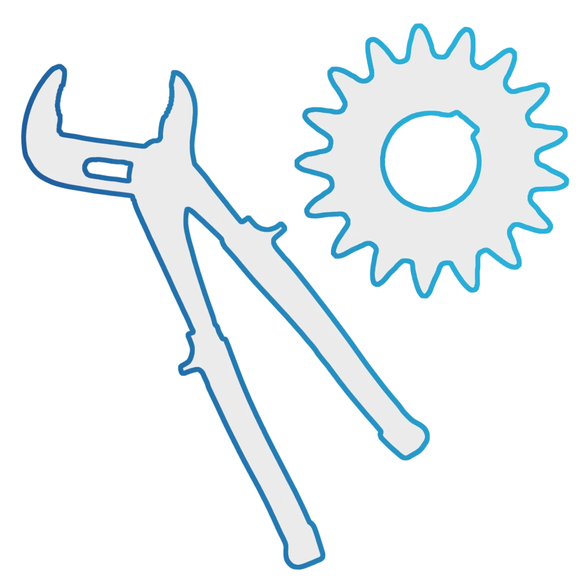

Instal-SerwisTradycja w montażu, precyzja w detalu. Rodzinne rzemiosło instalacji gazowych na bezkompromisowym poziomie.
Jesteśmy rodzinną firmą, która od blisko dwóch dekad wyznacza standardy na polskim rynku instalacji przemysłowych. Od budowy fundamentów, przez montaż oraz serwis zbiorników kriogenicznych, aż po konstruowanie skomplikowanych systemów gazów technicznych - bierzemy pełną odpowiedzialność za to, co tworzymy.
Zaufali nam liderzy branży energetycznej, medycznej i chemicznej, bo wiedzą, że za naszymi projektami stoi nie tylko rzemieślnicza precyzja, ale też pokoleniowa pasja do inżynierii. Nasza wiedza ewoluuje wraz z technologią, ale jedno pozostaje niezmienne: jakość, za którą ręczymy własnym nazwiskiem.
Integracja zaawansowanych systemów wymaga rozwiązań szytych na miarę.
Sprawdź, w czym się specjalizujemy.
Wiemy, jak rygorystyczne normy panują w branży farmaceutycznej, laboratoryjnej i spożywczej. Dlatego nasze instalacje wykonujemy z zegarmistrzowską precyzją. Nie jesteśmy anonimowym gigantem, co ułatwia kontakt i przejrzystość na każdym etapie. Skontaktuj się z nami, a osobiście odpowiemy na wszystkie Twoje pytania.
Czytaj więcej ❯Bierzemy pełną odpowiedzialność za cykl życia Twoich urządzeń: od precyzyjnego montażu nowych zbiorników kriogenicznych, przez ich bieżące serwisowanie, aż po generalne remonty. Gwarantujemy profesjonalizm, dzięki któremu Twój zbiornik będzie w pełni bezpieczny, funkcjonalny i gotowy do pracy.
Czytaj więcej ❯Integrujemy systemy technologiczne dla sektora spożywczego na każdym szczeblu - od lokalnej gastronomii po wielkoskalowe zakłady produkcyjne. Wdrażamy nowoczesne, bezpieczne rozwiązania, które bezkompromisowo spełniają najbardziej rygorystyczne normy i atesty.
Czytaj więcej ❯